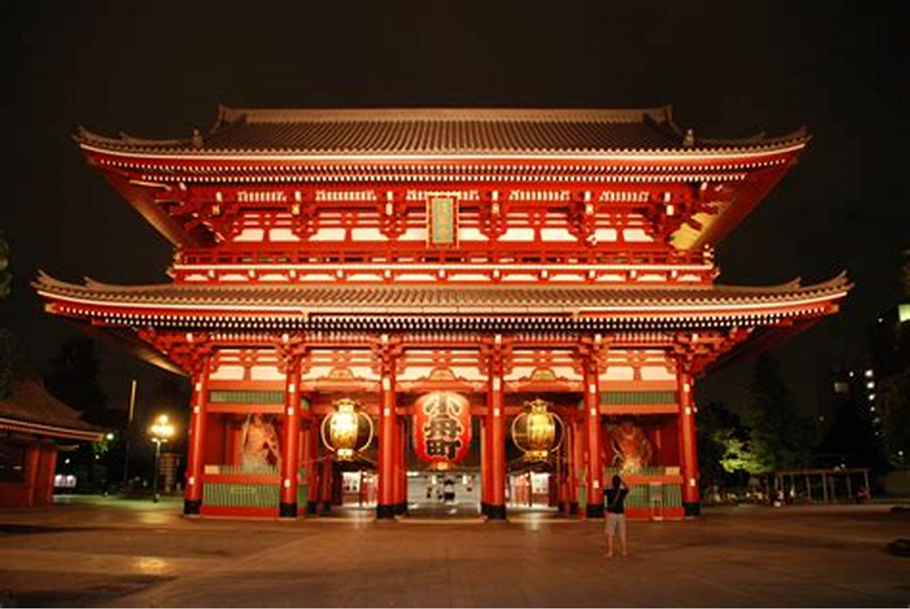
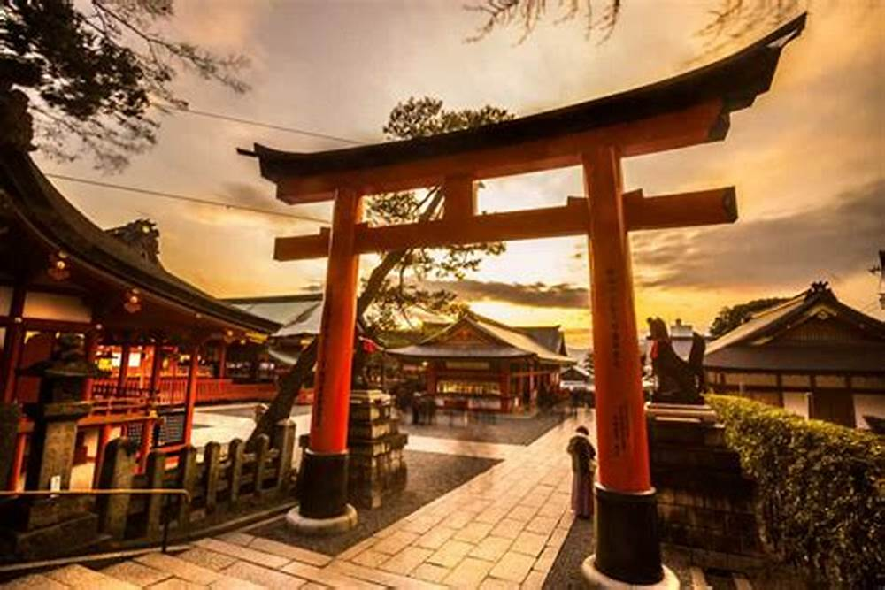
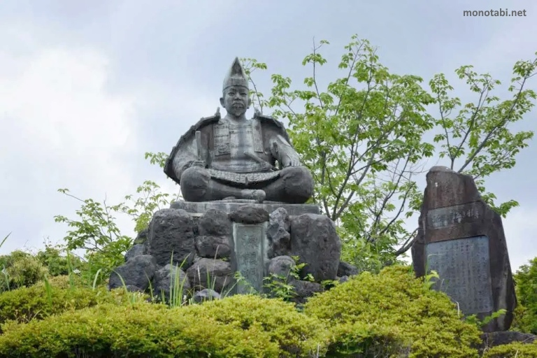

El Templo Sensō-ji es el templo budista más antiguo de Tokio, construido en honor a la diosa Kannon. Fue reconstruido después de la Segunda Guerra Mundial gracias a las donaciones de los ciudadanos japoneses1.


.jpg)
| MONUMENTOS DE JAPÓN | |||
| Index Historia y Detalles del Pais Cultura de Japon Leyendas de Japón Sitios Turisticos | |||
| Templo Sensō-ji (Tokio) |
Fushimi Inari Taisha (Kioto) | Tumba y estatua de Minamoto no Yoritomo (Kamakura) |
Monte Fuji (Tokio) |
El Templo Sensō-ji es el templo budista más antiguo de Tokio, construido en honor a la diosa Kannon. Fue reconstruido después de la Segunda Guerra Mundial gracias a las donaciones de los ciudadanos japoneses1. |
Conocido como el "Templo de los 10,000 Torii", este santuario shinto está dedicado al dios Inari, protector de las cosechas. Es famoso por sus miles de torii rojos que forman un camino a través de las colinas. | Minamoto no Yoritomo fue el primer shogun de Japón. Su tumba y estatua se encuentran en Kamakura, una ciudad conocida por sus numerosos templos y santuarios. |
El Monte Fuji es el pico más alto de Japón y es un símbolo nacional. Es un lugar popular para los alpinistas y ofrece vistas espectaculares desde su cima. |
|  |  |  | |
| Castillo Himeji (Hyōgo) | Santuario Itsukushima (Hiroshima) | Palacio Imperial de Kioto (Tokio) | Templo Todai-ji (Nara) |
| El Castillo Himeji es uno de los castillos japoneses mejor conservados y es Patrimonio de la Humanidad por la UNESCO. Es famoso por su arquitectura imponente y su historia durante el período Sengoku. | Ubicado en la isla de Miyajima, este santuario shinto es famoso por su torii de agua, que parece flotar sobre el agua durante la marea alta. | El Palacio Imperial de Kioto es la residencia oficial del Emperador de Japón y es un símbolo de la historia y la cultura japonesa. | El Templo Todai-ji alberga una enorme estatua de Buda Vairocana y es uno de los templos más grandes de Japón. |
|
|
|
|
| Todos los derechos reservados | |||